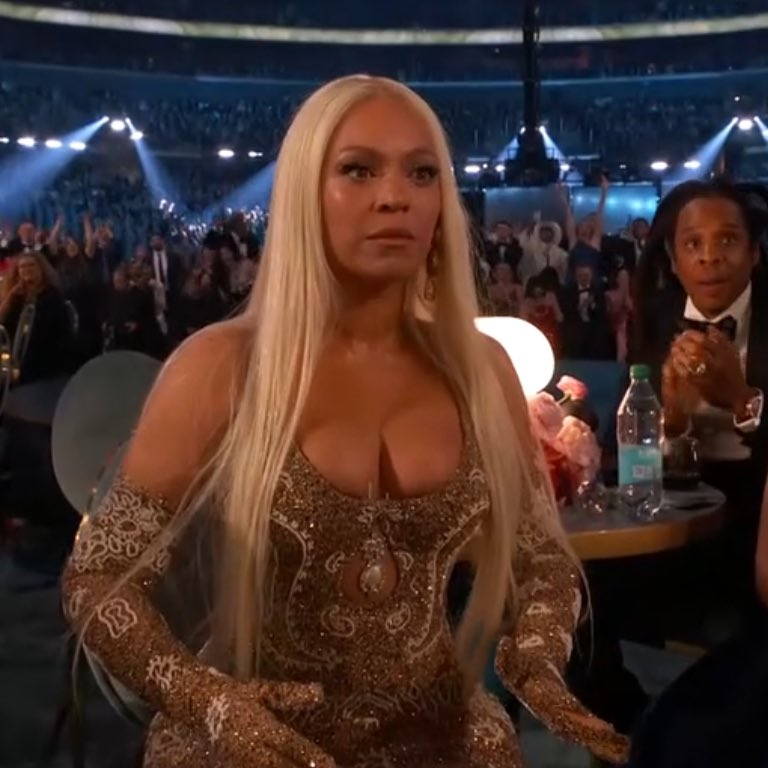
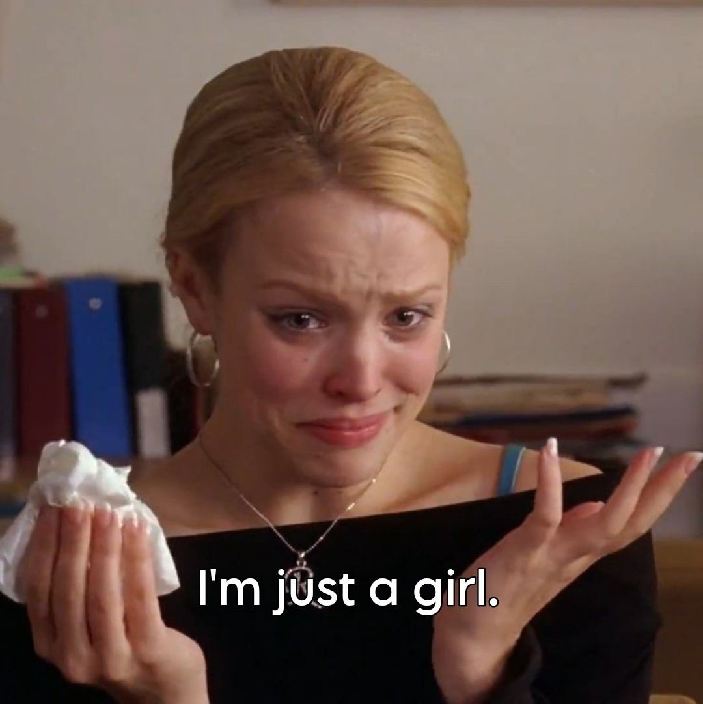

I’ve always had a soft spot for romance and musicals. I love movies that make me laugh, cry, and completely escape into another world. Some of my favorites include Pride & Prejudice, The Notebook, Little Women, Mamma Mia!, Hamilton, and Wicked. If there’s a good love story, dramatics, or a soundtrack I can’t stop singing, I’m probably watching it.
Style is one of my favorite ways to express myself. I love getting my nails and hair done, putting together outfits, experimenting with new fashion trends, and finding little ways to make a look my own. I’m always down to try something new—especially if it involves a cute outfit, fresh set, or a little extra sparkle.
I genuinely love music in all its forms and my playlist has absolutely no genre boundaries. One minute I’m listening to Beyoncé, the next it’s a Glee cover, Tyla, Drake, Taylor Swift, or Lil Uzi Vert. My music taste is constantly evolving, and there’s pretty much a song for every mood, moment, and personality.

